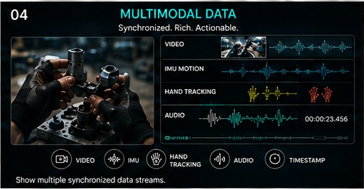
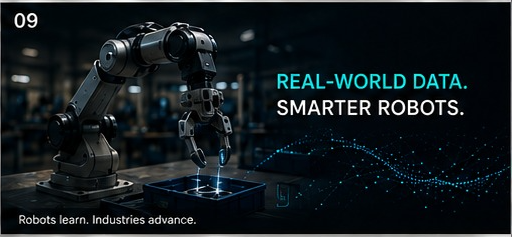
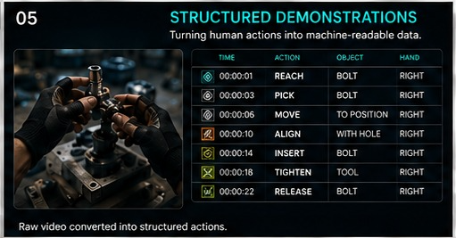
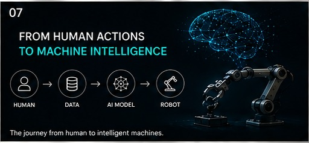

◉
All Backgrounds
Access diverse contributors and real-world perspectives suited to different tasks, environments and data programs.
From egocentric capture and multimodal sensing to annotation, teleoperation and evaluation, Byntrava helps teams build the data foundation behind intelligent systems.
Access diverse contributors and real-world perspectives suited to different tasks, environments and data programs.
Flexible workflows support multiple project types, from capture and annotation to evaluation and validation.
Clear project processes and dependable payment workflows help contributors and partners work with confidence.
Defined guidelines, checks and review stages keep quality at the center of every dataset.
Start with a focused requirement and expand collection or annotation as your program grows.

We provide quality first-person data captured from human perspectives for imitation learning, embodied AI and robotics. Capture can include real tasks, object interactions and varied environments.

Video, audio, IMU, depth and synchronized sensor streams can be collected to give models richer context about movement, environment and actions.

Image, video, text and speech annotation workflows designed around clear instructions, review stages and consistent labeling.

Human-in-the-loop robot control data that captures expert behavior and helps teams develop, evaluate and improve robotic capabilities.

Human actions organized into task steps, events and machine-readable sequences that can plug into training and evaluation workflows.

Human-led evaluation and quality workflows to assess model outputs, edge cases and real-world performance against defined criteria.
We can support a single stage or combine multiple services into one coordinated program — from collection and annotation through validation and delivery.
DISCUSS YOUR REQUIREMENT →